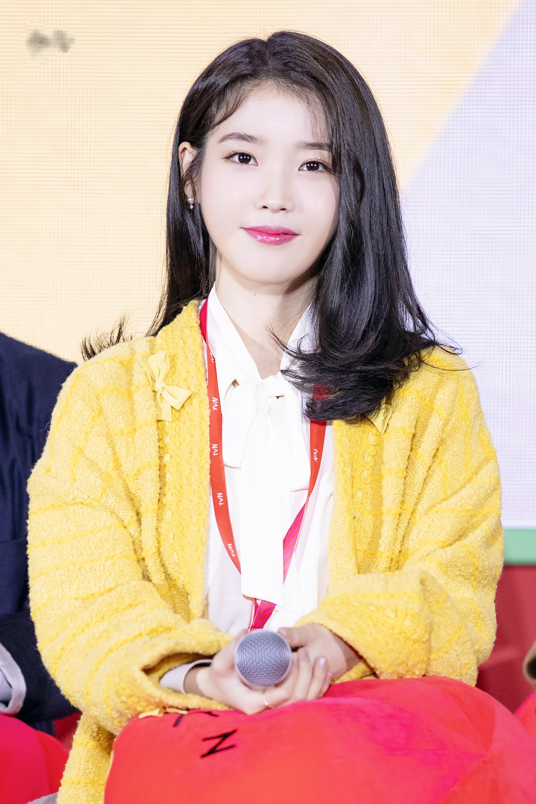

Lee Ji-eun (Korean: 이지은; Hanja: 李知恩, known professionally as IU (Korean: 아이유), is a South Korean singer-songwriter and actress.
During her middle school years, IU found her passion for singing and decided to become a singer after being applauded for a performance she gave at her school's sports competition. She attended 20 auditions but failed all of them, and was also scammed by fake entertainment companies IU used to train at Good Entertainment with Uee, Yubin, Heo Ga-yoon, and Jun Hyoseong. After signing with LOEN Entertainment in 2007, she moved to Bangbae, Seoul. Despite the prospect of her being put into a girl group, she made her solo debut in 2008 after ten months of training. Due to her living conditions at the time, IU stated that she "loved being at the studio", where she could eat as much as she wanted and had a place to sleep. Prior to her debut, LOEN coined her stage name "IU", deriving it from the phrase "I and You" to symbolize the unifying force of music between people.